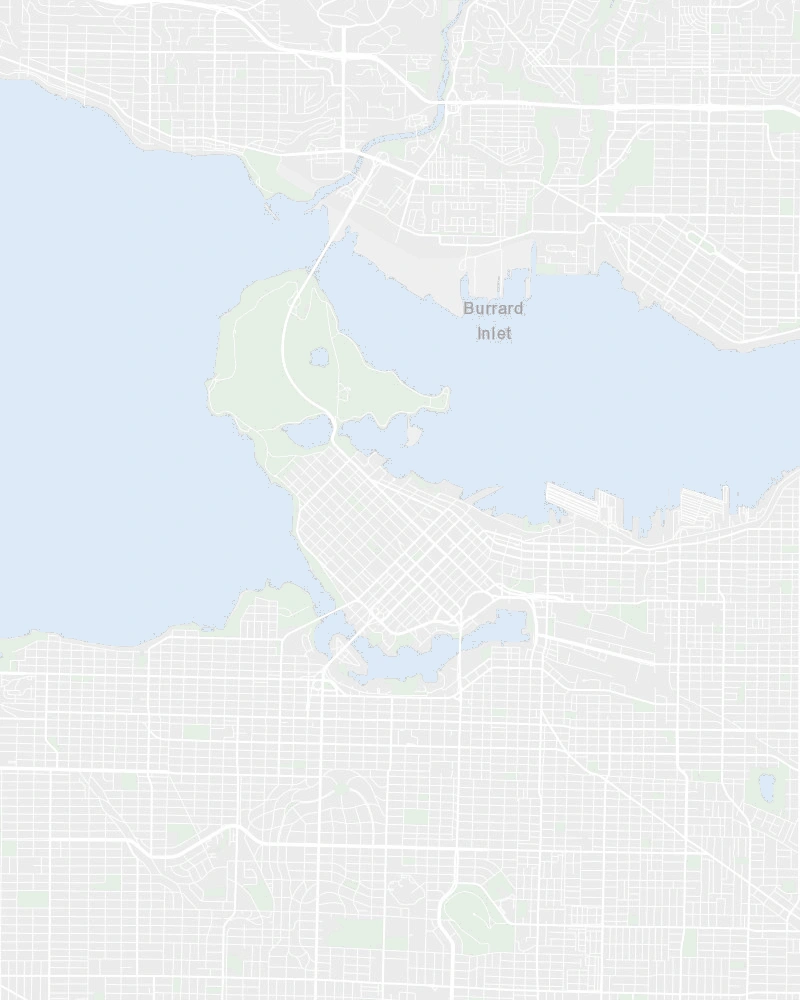
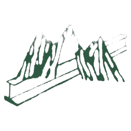

I am Atta Rahman, a Product Designer based in Vancouver, Canada. I design intuitive interfaces, scalable design systems, and end-to-end digital experiences for digital products.
My Approach
My approach is rooted in an engineering and operations background, where managing physical tolerances and systems taught me that great design eliminates failure points before they manifest.
With a postgraduate diploma in Web and Mobile App Design from Langara College, I combine structured systems thinking with human empathy to craft intuitive, resilient digital experiences.
Outside of design, you’ll find me sketching concepts, gaming, and exploring Vancouver’s creative spaces for visual inspiration.

Vancouver, BC
How I work, from brief to launch
Understand
Before anything gets designed, I dig into the brief: what's actually needed, what's constrained, and what success looks like. I'd rather ask an extra question upfront than guess at the problem later.
Explore & Design
This is where sketches, wireframes, and prototypes start doing the thinking, testing structure, motion, and usability against each other. Every decision has to earn its place by being clear and genuinely useful to the person using it.
Build
Designs get handed off properly: documented, implemented, and checked against how they actually behave, not just how they look. I stay close through this stage and adjust whatever needs adjusting.
Test & Refine
A design isn't finished when it ships, it's finished when real people have used it and it holds up. I watch how it's actually used, gather feedback, and keep refining until it feels obvious rather than merely functional.
Tools I Use
A focused toolkit for designing, prototyping, and building exceptional digital experiences.
Areas of Expertise
A multidisciplinary foundation spanning digital products, brand visual systems, and AI workflows.
Product & UI/UX Design
End-to-end design for complex mobile and web software. From initial user discovery and journey mapping to tokenized component libraries and high-fidelity interactive prototypes.
Visual Design & Systems
Art-directed typography, tokenized component libraries, and packaging systems. Crafting cohesive visual identities that command presence and communicate authenticity.
AI + Interface Evaluation
Evaluating AI-generated product interfaces for cognitive load, visual consistency, and information hierarchy. Integrating generative workflows and OCR into frictionless product UX.
Career Journey
Design roles, specialized education, and systems background.
Product Design / UX Expert (Contract)
Engaged as a subject-matter expert by Mercor Intelligence to evaluate AI-generated design work against usability heuristics and interaction design principles, raising outputs to a human-expert quality bar.
Postgraduate Diploma, Web & Mobile App Design
Specialized in UI/UX design, mobile application architecture, design systems, and responsive web experiences through collaborative projects.
Structural Engineer & Quality Control Lead

Pan Orobica Steel Structures LtdLed quality control across fabrication workflows for structural steel projects: developed inspection checklists, enforced tolerances, and managed production schedules.
B.Eng. Mechanical Engineering
Built a rigorous engineering foundation in systems thinking, precision tolerances, stress analysis, and structured problem framing.
Let's collaborate on thoughtful products.
Available for Product Design roles, contract collaborations, or design systems consulting in Vancouver, remote, or hybrid.